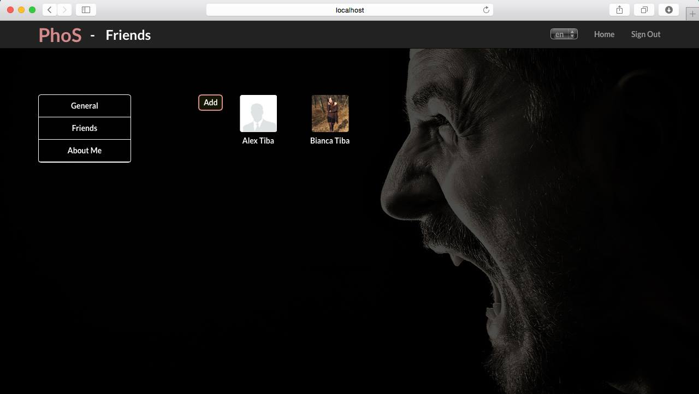
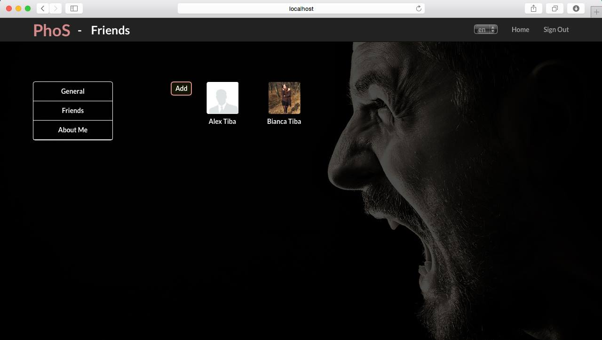

PhoS is a phobias application built for every person. The user interface makes the interaction very easy to be made between user and application and also between users.
Using PhoS, a user can find out his own phobias, to get useful information about them and make sure that whenever he is planning to do something, isn't put in danger regarding his phobias. Also, adding his friends in the application, a user can find out how not to put in risk his friends when planning something.
Being a responsive web application, Phos can be used either on the desktop on any browser, either in smartphones and any kind of environoement
To complete some use cases of the application, please see the following steps
An user can start using the application by logging in with his Gmail account.
After signing in, the user get into the Home page. Also, as a first step, the user can choose the language of the application. So far he can choose between English and French.
 
